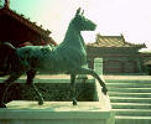

呂清夫 撰文

世紀初，福特汽車剛出爐的時候，外形竟然像個馬車，這因為大家過去習慣於坐馬車，所以機械化的汽車也做馬車狀。但是不久即被改成流線形了，因為那樣才能配合車子的速度與板金的彎曲。在此，馬車是傳統，汽車是現代，汽車有必要固執馬車的形態嗎？艾菲爾鐵塔在今天已是巴黎的標誌，但是誰知道，艾菲爾鐵塔剛出爐的時候，不知挨了多少的臭罵，有人說它是醜陋的大煙囪，有人說它損害了巴黎的優雅。大家都覺得這個鐵塔的外形太不習慣，太反傳統，於是鳴鼓而攻。但是曾幾何時，前人的近視卻成了後人的笑柄，鐵塔是走在時代的前端，其中表現了近代特有的鋼鐵文化，腦筋僵化的人自然是吃不消了。我們常喜歡在水泥建築上方，加一個宮殿式的屋頂，並以此自得，中山樓、圓山大飯店、國家歌劇院都是這一類。其實這是最最違反審美的原則，不論國父紀念館的設計人王大閔，或者中國美術史學者M•蘇利文都期期以為不可，因為水泥不宜模仿木材的造形，模仿不但無法展現傳統木造建築的特色，亦難發揮鋼筋水泥建築的優點，徒增「掛傳統賣洋貨」之嫌。大家之所以這麼喜歡宮殿式，可能出於一種習慣動作的反應，也可能出自一種觀光櫥窗的慾求，或者源自一種文化圖騰的崇拜，特別是官方，以為處處做成宮殿式，即可加深中華文化的向心力。但是不管哪一種，都可能影響了現代文化的創造力。其實，傳統的特色不能生吞活剝，亦不必望形生義，傳統的韻味正如語言工的南腔北調一樣，是與生俱來的，是血濃於水的。刻意強調傳統，往往只會堰苗助長，但可惜官方獎勵的繪畫、雕刻、舞蹈、音樂等等，常有這種傾向。近日據聞，政府要把我們的電話亭重新設計一番，於是邀請了很多人去開會，以便集思廣益。據說有人提出電話亭要具有傳統的特色，一時引起了不少的爭論。如果是一個古老的城市，具要求傳統的特色似乎是很自然的，但是我看巴黎的電話亭卻是完全無色透明的，十分現代化的，有人在街上打電話時，你只看到法國梧桐之下，或壯麗古厝之前，有個人在那�堣韙漡爾}而已，其他幾乎感覺不出電話亭的存在。如果要有傳統的特色，那麼他們太多了，什麼巴洛克式、洛可可式應有盡有，但法國人從未曾在藝術上刻意強調自己的傳統，就像富人不把金錢當回事一般。不只巴黎電話亭，在阿姆斯特丹是翠綠的，在科隆是鮮黃，外形都很流線，一點也不傳統。但是他們對於傳統文物的維護則是無微不至的，一個科隆大教堂的存在，竟然使得政府下令，周遭的建築不能蓋得比它高，以便凸顯大教堂的存在。在台灣，雖然藝術喜歡強調傳統特色，但傳統文物往往呈現「最年輕的古蹟，最徹底的破壞」，有人說，這是因為我們的傳統喜歡「除舊布新」。其次，人類本來就有點喜新厭舊或遊牧性，風景區的住民常不覺得當地風景有何好看，出國旅遊蔚為風氣乃是嚮往一種異國情調，因之，我們會特別欣賞別人的傳統，別人也一樣欣賞我們的特色，也因此，台灣很多傳統文物常是外國人先注意才引起我們注意，有些提倡民間藝術的人竟是炒作民藝品外銷的商人。在藝術創作上言，強調傳統特色有時難免是要迎合老外，或者是要「進軍國際」，要言之，意在營造一種觀光的櫥窗。然究其實，未必發自內心深處的需要，因此乃缺少了一種原創力。當一種藝術品或日用品的造形欠缺原創力時，便無甚品味可言。文化圖騰或觀光櫥窗的構設雖可能方便一時，但是如果導致原創力的受傷則是得不償失的，因為一切有口無心的文化活動將永遠折煞藝壇，而真正的傳統文物則永遠是「內行人巧奪之，外行人糟踢之」！